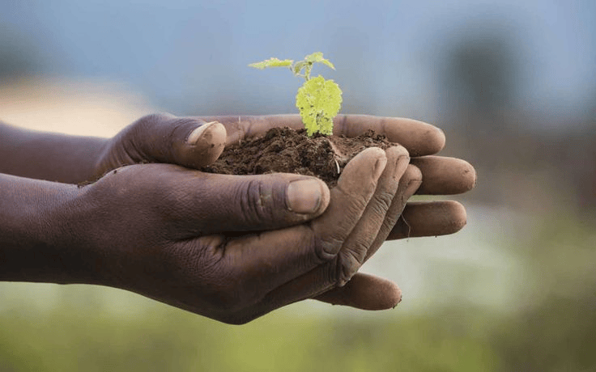

Where itbegan
Before there was a programme, a plan or a name for what it would become, there was a place for young people to meet, talk and enjoy each other's company.
A space of their own
Leafspire began as an Instagram-based social club. The idea behind it was a plain one: young people wanted somewhere to connect, to make friends, to talk and to spend time together.
There was no organisational structure behind it and no programme model to follow. Young people came together and made something that belonged to them.
The friendships and the feeling of belonging were the point, and they still are.
Nothing about that beginning needed to be fixed or outgrown. It carries the part of Leafspire that every later idea has depended on: people who like being around each other will usually find something worth doing together.

The power of coming together
When young people share a space, a few things tend to follow. Conversations get longer. Opinions get tested. Someone mentions a problem they noticed on their street, and someone else says they have thought about that too.
Those conversations turned out to matter. Friendship makes a place where it is easy to say what you think, and it showed how much energy, knowledge and creativity was already in the room.
The question that followed was what all of that could be used for.
A bigger question
Young people should not have to wait indefinitely for permission to contribute.
Young people have ideas, creativity, energy and knowledge, and they are able to contribute to society in meaningful ways. Opportunities to lead, to make decisions, to start an initiative and to influence the communities around them are often harder to come by.
In Kenya, as in many places, that can mean barriers to taking part, to finding opportunities and to being heard in decisions that shape young people's own futures. Leafspire does not tell this as a story about who is to blame. It is a gap, and gaps can be worked on.
The realisation was a simple one: the future belongs to the people who will live in it, so they should be able to start building it now.
From connection to purpose
The change did not come from a single meeting or a single day. It came gradually, as the idea of bringing young people together grew into a wider commitment to leadership, environmental responsibility, community participation and wellbeing.
The aim became larger than a place to meet. It became encouraging young people to turn their ideas into action, and to see the connection between their own futures and the future of the environment.
- A place for young people to meetbecame a place to start things
- Conversations about what is wrongbecame connections to the issues in local communities
- Ideas shared among friendsbecame ideas that could be acted on
- The future as something that arrivesbecame something young people help shape, greener and more resilient

Growing into Leafspire
Today, Leafspire is a youth-led social impact initiative rooted in Kenya. It works with young people and communities to encourage practical action, to strengthen participation, to promote environmental responsibility and to build healthier, more connected communities.
Its work sits across three connected areas.
-
Environmental sustainability and climate action
Looking after the places people live in, and acting on the climate pressures young people will inherit.
-
Youth leadership and community participation
Opportunities for young people to lead, take responsibility and take part in what happens around them.
-
Community wellbeing and social connection
The relationships and sense of belonging that started it all, and that keep communities strong.

Growing People.Greening Communities.
The tagline describes how Leafspire sees its work. Developing people and protecting the environment belong together, because healthy communities need both.
The future we are working towards
Leafspire is still growing and still working out its shape. Where it is heading is clear: more opportunities for young people to take part, more support for environmental action, closer relationships with communities and practical contributions to sustainable development.
The Sustainable Development Goals give that direction a shared language, covering climate action, sustainable communities, good health and wellbeing, and partnerships. They matter most where someone takes them up locally, in a neighbourhood, with the people who live there.
The future is not something young people should wait to inherit. They should have the chance to help shape it.
Leafspire is currently an unregistered, youth-led initiative. This page describes where it has come from and where it hopes to go, not a record of everything it has achieved.
The story is still unfolding.
It will be shaped by participation, shared responsibility and practical action. Here are some ways to follow it further.